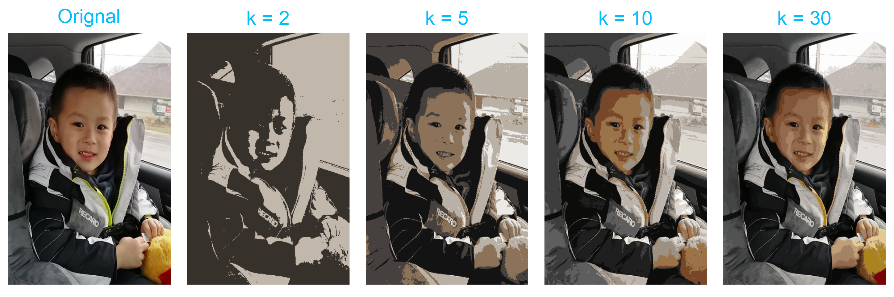
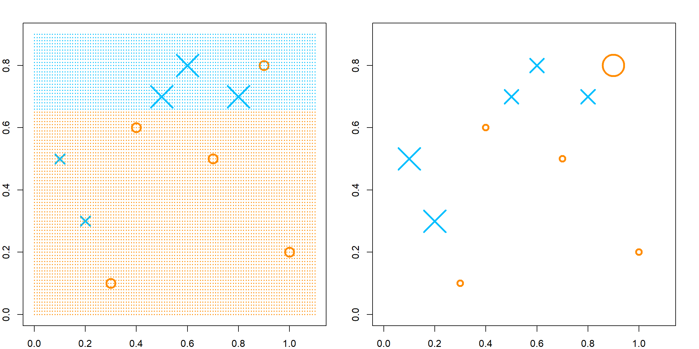
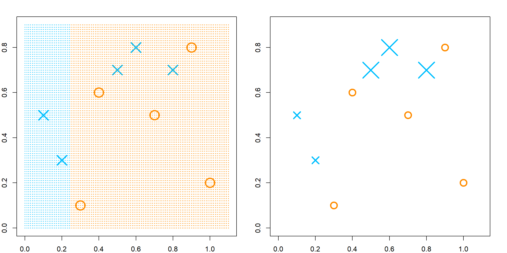
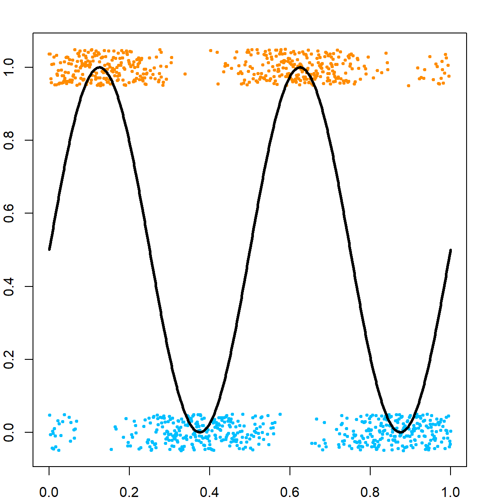
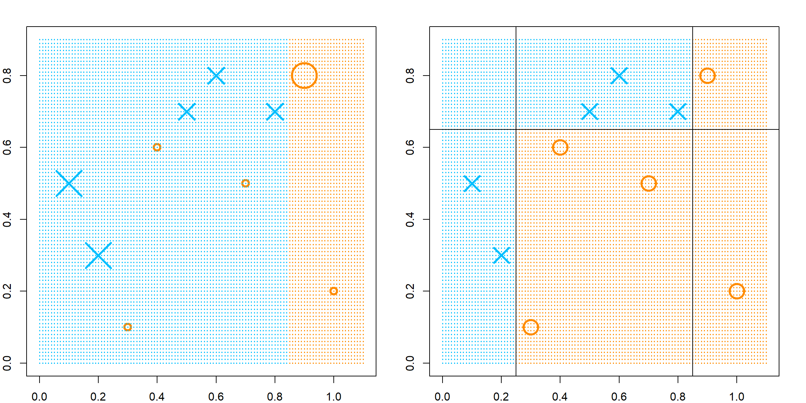
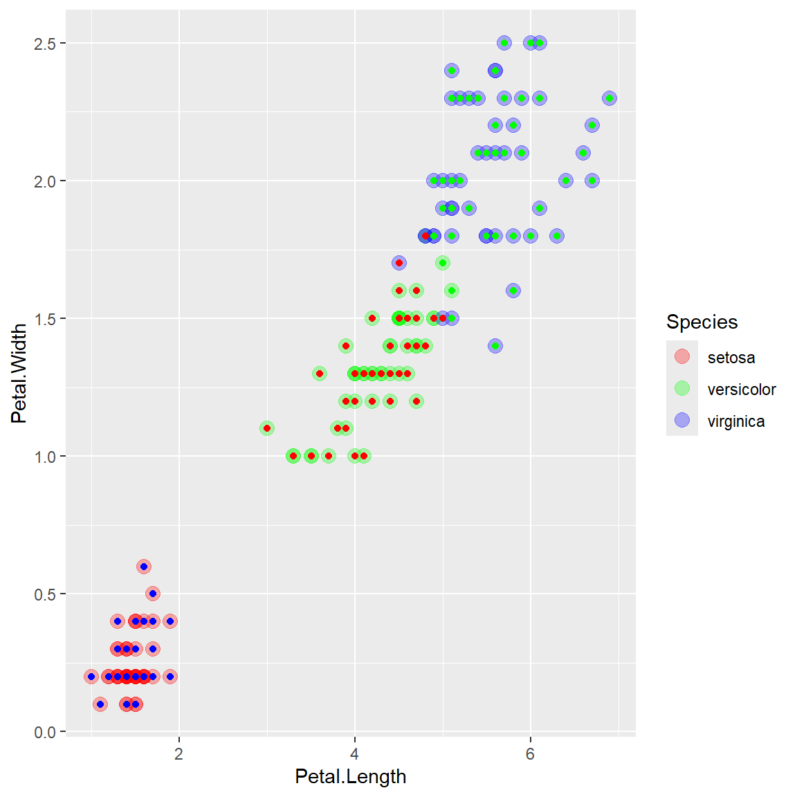
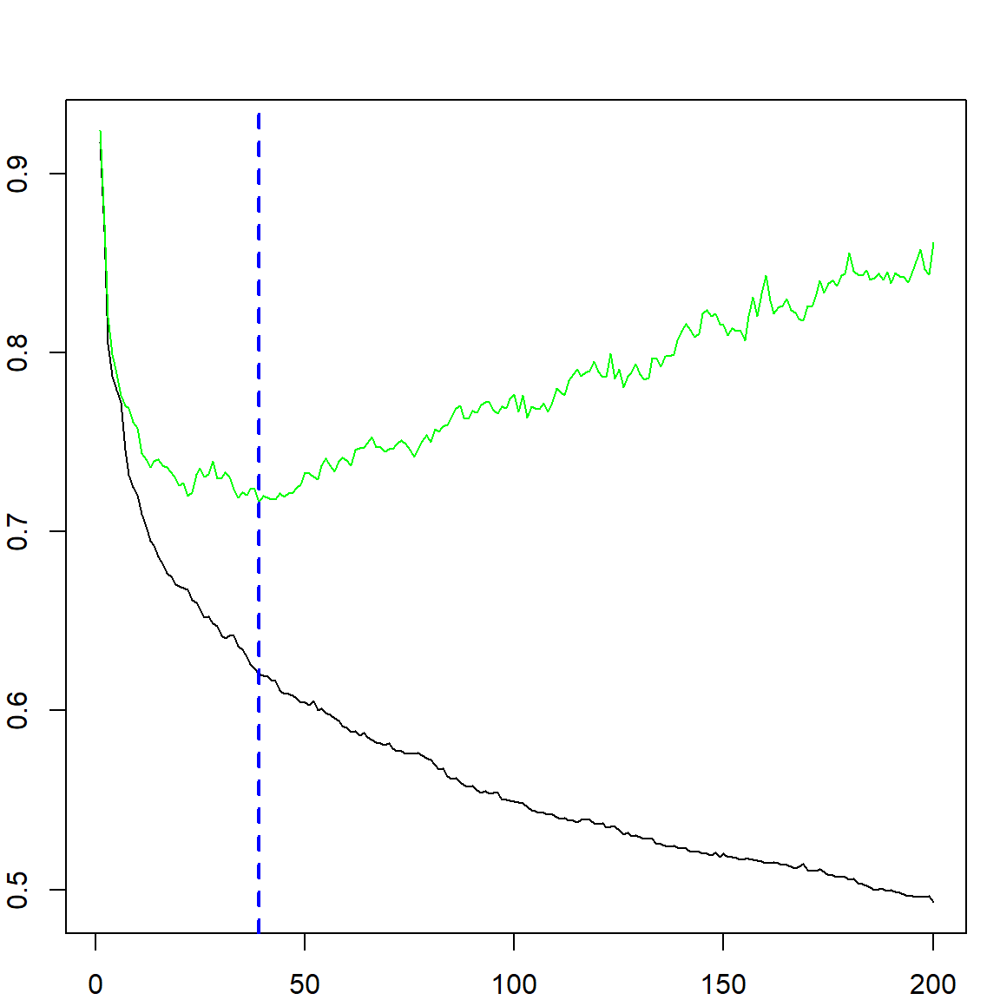
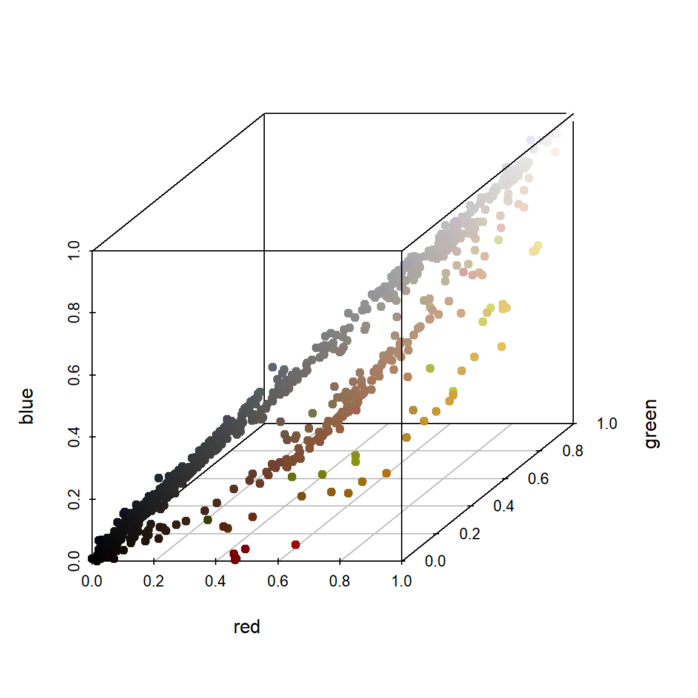
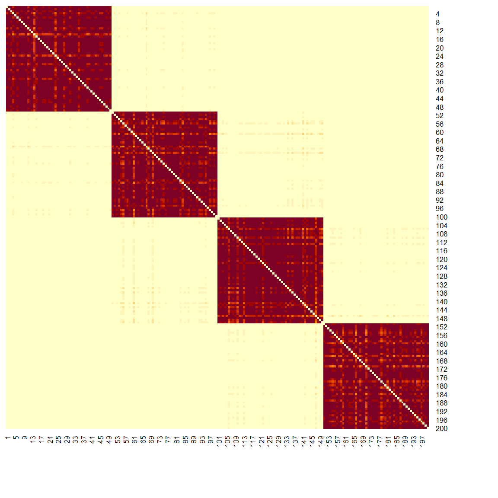

Chapter 20 K-Means
20.1 Basic Concepts
The \(k\)-means clustering algorithm attempts to solve the following optimization problem:
\[ \underset{C, \, \{m_k\}_{k=1}^K}\min \sum_{k=1}^K \sum_{C(i) = k} \lVert x_i - m_k \rVert^2, \] where \(C(\cdot): \{1, \ldots, n\} \rightarrow \{1, \ldots, K\}\) is a cluster assignment function, and \(m_k\)’s are the cluster means. To solve this problem, \(k\)-means uses an iterative approach that updates \(C(\cdot)\) and \(m_k\)’s alternatively. Suppose we have a set of six observations.

We first randomly assign them into two clusters (initiate a random \(C\) function). Based on this cluster assignment, we can calculate the corresponding cluster mean \(m_k\)’s.

Then we will assign each observation to the closest cluster mean. In this example, only the blue point on the top will be moved to a new cluster. Then the cluster means can then be recalculated.

When there is nothing to move anymore, the algorithm stops. Keep in mind that we started with a random cluster assignment, and this objective function is not convex. Hence we may obtain different results if started with different values. The solution is to try different starting points and use the best final results. This can be tuned using the nstart parameter in the kmeans() function.
20.2 Example 1: iris data
We use the classical iris data as an example. This dataset contains three different classes, but the goal here is to learn the clusters without knowing the class labels.
# plot the original data using two variables
head(iris)
## Sepal.Length Sepal.Width Petal.Length Petal.Width Species
## 1 5.1 3.5 1.4 0.2 setosa
## 2 4.9 3.0 1.4 0.2 setosa
## 3 4.7 3.2 1.3 0.2 setosa
## 4 4.6 3.1 1.5 0.2 setosa
## 5 5.0 3.6 1.4 0.2 setosa
## 6 5.4 3.9 1.7 0.4 setosa
library(ggplot2)
ggplot(iris, aes(Petal.Length, Petal.Width, color = Species)) + geom_point()
The last two variables in the iris data carry more information on separating the three classes. Hence we will only use the Petal.Length and Petal.Width.
library(colorspace)
par(mar = c(3, 2, 4, 2), xpd = TRUE)
MASS::parcoord(iris[, -5], col = rainbow_hcl(3)[iris$Species],
var.label = TRUE, lwd = 2)
legend(x = 1.2, y = 1.3, cex = 1,
legend = as.character(levels(iris$Species)),
fill = rainbow_hcl(3), horiz = TRUE)
Let’s perform the \(k\)-means clustering
set.seed(1)
# k mean clustering
iris.kmean <- kmeans(iris[, 3:4], centers = 3, nstart = 20)
# the center of each class
iris.kmean$centers
## Petal.Length Petal.Width
## 1 1.462000 0.246000
## 2 5.595833 2.037500
## 3 4.269231 1.342308
# the within cluster variation
iris.kmean$withinss
## [1] 2.02200 16.29167 13.05769
# the between cluster variation
iris.kmean$betweenss
## [1] 519.524
# plot the fitted clusters vs. the truth
iris.kmean$cluster <- as.factor(iris.kmean$cluster)
ggplot(iris, aes(Petal.Length, Petal.Width, color = Species)) + # true cluster
geom_point(alpha = 0.3, size = 3.5) +
scale_color_manual(values = c('red', 'green', 'blue')) +
geom_point(col = c("blue", "green", "red")[iris.kmean$cluster]) # fitted cluster 
20.3 Example 2: clustering of image pixels
Let’s first load and plot an image of Leo.
library(jpeg)
img<-readJPEG("data/leo.jpg")
# generate a blank image
par(mar=rep(0.2, 4))
plot(c(0, 400), c(0, 500), xaxt = 'n', yaxt = 'n',
bty = 'n', pch = '', ylab = '', xlab = '')
rasterImage(img, 0, 0, 400, 500)
For a jpg file, each pixel is stored as a vector with 3 elements — representing red, green and blue intensities. However, by the way, that this objective img being constructed, it is stored as a 3d array. The first two dimensions are the height and width of the figure. We need to vectorize them and treat each pixel as an observation.
dim(img)
## [1] 500 400 3
# this apply function applies vecterization to each layer (r/g/b) of the image.
img_expand = apply(img, 3, c)
# and now we have the desired data matrix
dim(img_expand)
## [1] 200000 3Before performing the \(k\)-mean clustering, let’s have a quick peek at the data in a 3d view. Since there are too many observations, we randomly sample a few.
library(scatterplot3d)
set.seed(1)
sub_pixels = sample(1:nrow(img_expand), 1000)
sub_img_expand = img_expand[sub_pixels, ]
scatterplot3d(sub_img_expand, pch = 19,
xlab = "red", ylab = "green", zlab = "blue",
color = rgb(sub_img_expand[,1], sub_img_expand[,2],
sub_img_expand[,3]))
The next step is to perform the \(k\)-mean and obtain the cluster label. For example, let’s try 5 clusters.
kmeanfit <- kmeans(img_expand, 5)
# to produce the new graph, we simply replicate the cluster mean
# for all observations in the same cluster
new_img_expand = kmeanfit$centers[kmeanfit$cluster, ]
# now we need to convert this back to the array that can be plotted as an image.
# this is a lazy way to do it, but get the job done
new_img = img
new_img[, , 1] = matrix(new_img_expand[,1], 500, 400)
new_img[, , 2] = matrix(new_img_expand[,2], 500, 400)
new_img[, , 3] = matrix(new_img_expand[,3], 500, 400)
# plot the new image
plot(c(0, 400), c(0, 500), xaxt = 'n', yaxt = 'n', bty = 'n',
pch = '', ylab = '', xlab = '')
rasterImage(new_img, 0, 0, 400, 500)
With this technique, we can easily reproduce results with different \(k\) values. Apparently, as \(k\) increases, we get better resolution. \(k = 30\) seems to recover the original image fairly well.
## Warning: did not converge in 10 iterations